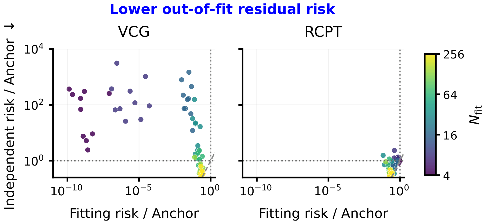
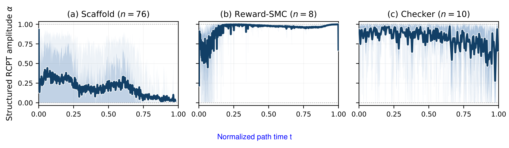
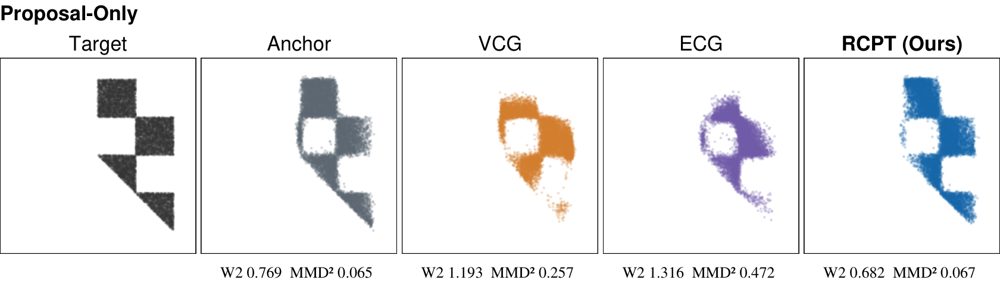
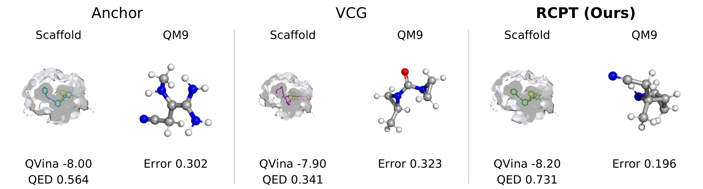

NeurIPS 2026 Workshop on AI for Stochastic Dynamics (STODY)
Risk-Calibrated Proposal Transport for Finite-Particle Diffusion Steering
1Seoul National University 2Asteromorph
† Corresponding author
Abstract
TL;DR A diffusion steering update can fit a small particle population almost perfectly and still fail on fresh samples. RCPT estimates how much of that update to keep, using the particles already in memory.
Inference-time steering combines pretrained diffusion experts or rewards without retraining by changing the dynamics that transport noise to data. Feynman–Kac correction compensates for proposal mismatch through importance-weighted sequential Monte Carlo (SMC), whose finite-particle behavior depends on the proposal. Variance-controlling guidance (VCG) improves that proposal by fitting a linear drift correction to minimize empirical log-weight-rate variance. Although its population optimum cannot worsen residual variance, finite-particle VCG can nearly eliminate its fitting residual while increasing residual risk on new states by orders of magnitude.
We explain this failure through population headroom and coefficient-estimation penalty, and connect the residual to transport error and local weight variance. Risk-Calibrated Proposal Transport (RCPT) uses deletion leave-one-out residuals to scale the fitted update, with no additional model calls. Experiments on Checker, scaffold decoration, QM9, and CIFAR-10 identify regimes where this inexpensive control repairs harmful updates or improves upon the initial guided proposal (Anchor). Together, these results establish finite-particle proposal fitting as a deployment-risk problem and provide an inexpensive framework for controlling the fitted correction.
A good fit can travel poorly

Method and Theory
Why measure the Feynman–Kac residual?
At a fixed time, let \(V(0)\) be Anchor’s residual risk, the variance of its Feynman–Kac log-weight rate under the target distribution. For any proposal drift \(v\), subtracting the mean from its log-weight rate \(g_t^v\) gives the residual \(r_t^v\).
The term \(p_t r_t^v\) is the change in density that the proposal’s dynamics leave unaccounted for. The residual risk \(V_t(v)=\mathbb E_{p_t}[(r_t^v)^2]\) measures the mean squared mismatch in relative growth rate across target states.
In proposal-only sampling, this mismatch can accumulate as particles move, taking their final distribution away from the target. In corrected SMC, particles in regions with a larger residual gain weight faster. The first card below bounds the error in the final distribution. The second gives the leading term in the variance of the correction weights over a short step.
Proposal-only
Start the unweighted proposal from the target’s initial law. Under the paper’s regularity assumptions, its terminal Wasserstein distance from the target is bounded by the accumulated cost of correcting its drift.
\(K_v\) measures how drift can amplify an earlier error. When the target has Poincaré constant \(C_P(t)\), residual risk bounds the correction energy \(\mathcal E_t(v)\). Keeping risk small along the path therefore controls an upper bound on endpoint error. Eq. (14)
Corrected SMC
Start a short proposal step of length \(\Delta\) at the target law \(p_t\). For the exact FK correction weight \(\overline W\), normalized to mean one, the local weight expansion gives
The left side is the weight variance under the proposal. Thus \(V_t(v)\) is the leading coefficient of the spread in particle weights over a short step. Smaller risk means less local weight dispersion before resampling. Eq. (15)
When does a fitted correction help?
An ideal drift correction can reduce the risk by an amount \(H\), the population headroom. Fitting its coefficients on a finite sample incurs an estimation penalty \(P\). For the fitted coefficients \(\widehat\lambda\), the paper gives an exact identity for risk averaged over fits and evaluated on fresh target states.
When \(P>H\), applying the full update increases expected risk even if the training residual is nearly zero. This explains the points in Figure 1 that sit far left but high above Anchor.
Fit the direction
Use VCG to find a linear correction to the base drift. The finite-particle question is how much of that fitted direction will help on new states.
Estimate the risk
Use deletion leave-one-out residuals to estimate the cost of fitting the coefficients. The estimate reuses particle and expert evaluations.
Scale the update
Retain a fraction between zero and one. Zero gives Anchor, and one applies the full VCG correction. The scale can vary over generation time.
From the risk identity to a steering rule
When the mean coefficient error has zero alignment with the ideal correction in the residual-risk geometry, the optimal fixed fraction is \(H/(H+P)\) for \(H+P>0\). RCPT estimates a fraction during sampling. It uses the fitted correction’s empirical variation \(S\) and estimates its penalty from leave-one-out prediction errors.
The deployed coefficients are \(\widetilde\lambda=\widehat\alpha\widehat\lambda\). The penalty grows with the held-out error and effective number of fitted directions, and shrinks with effective particle count. If it exhausts the estimated gain, the positive part sets the correction to zero. The small positive \(\varepsilon\) stabilizes the fraction.
The fitted fraction varies by task. Follow each panel through its native time coordinate. The thick curve summarizes the chosen fractions, and the shaded band shows their interquartile range.
How much correction survives?

Applications
Each task specifies a target distribution and an Anchor that proposes samples. RCPT adjusts how much of a fitted drift correction to apply. The four experiments differ in what defines the target and which directions the correction can take.
Synthetic Checker
On the alternating checkerboard, keep points satisfying both \(A=\{x\ge 0\}\) and \(B=\{x+y\ge 0\}\). Since \(A\) depends only on \(x\), the endpoint density factors as
The three learned experts define the ACE path. The joint expert conditioned on \(B\) supplies the Anchor velocity. RCPT fits six quadratic-or-lower monomials per coordinate, giving 12 directions. The exact checkerboard law lets us measure how close fresh samples come to the target. Table 2
Scaffold decoration
Generate a ligand that retains a given scaffold and fits a protein pocket. Four experts describe fragment and full-ligand densities (EDM), scaffold conformation (GeoDiff), and the pocket-conditioned ligand (DiffSBDD). Their densities \(q_{i,t}\) form the ACE target path.
The ACE schedule fixes the exponents \(\gamma_i(t)\). RCPT fits a correction from each expert velocity multiplied by three gates based on relative log density. The 12 coefficients are fitted per pocket and frozen before generating fresh ligands. Table 3
QM9 molecular properties
Start with an EEGSDE molecular density \(q_t\) conditioned on dipole moment. Two rewards favor a requested polarizability and HOMO–LUMO energy gap. With \(j\) indexing these properties, the target is
The weights \(\beta_{j,t}\) set the strength of each reward. RCPT fits 12 directions built from the two reward gradients and gates that depend on time and molecular state. Independent evaluators count a success when both property errors fall within one validation-set mean absolute deviation. Table 4
Class-conditional CIFAR-10
For a requested class \(c\), the DLSM image density \(q_t(x)\) is weighted by the probability that a noise-conditioned classifier assigns to that class.
The classifier probability enters the target to the first power. The Anchor uses a guidance scale of 1.5 during sampling. RCPT keeps that scale fixed and adjusts a correction built from ten classifier-gradient fields. The evaluation measures class accuracy alongside image quality. Table 5
Results
Checker makes the failure visible because its target distribution is known. With 16 fitting particles, the unscaled correction reaches 174.0 times Anchor’s independent risk. Calibrating that same direction brings the ratio to 0.4931.
| Fit particles | Anchor | VCG | Direct LOO | LOO ridge | LOO PCR | Binary LOO | RCPT |
|---|---|---|---|---|---|---|---|
| 8 | 1.0000 | 244.5 | 0.9239 | 0.9211 | 1.0300 | 0.8193 | 0.8013 |
| 16 | 1.0000 | 174.0 | 1.1260 | 0.8306 | 1.1740 | 0.7837 | 0.4931 |
| 32 | 1.0000 | 2.797 | 0.3821 | 0.3705 | 0.6127 | 0.4332 | 0.3589 |
Mean integrated risk over ten paired fits. Lower is better. LOO denotes leave-one-out and PCR denotes principal component regression.
Where fresh samples land

The ten-seed experiment below compares endpoints both with and without particle resampling. Under corrected sequential Monte Carlo (SMC), RCPT yields the smallest distribution distances and the most surviving ancestral lineages.
| Controller | Proposal only | Corrected SMC | |||||
|---|---|---|---|---|---|---|---|
| W₁ ↓ | W₂ ↓ | MMD² ↓ | W₁ ↓ | W₂ ↓ | MMD² ↓ | Lineages ↑ | |
| Anchor | 0.474 | 0.646 | 0.048 | 0.367 | 0.510 | 0.048 | 338.7 |
| VCG | 0.814 | 1.019 | 0.226 | 2.637 | 3.033 | 5.123 | 381.6 |
| ECG | 1.394 | 1.636 | 0.325 | 0.833 | 1.113 | 0.214 | 233.7 |
| RCPT | 0.442 | 0.575 | 0.073 | 0.316 | 0.464 | 0.042 | 568.5 |
Each method fits on 16 particles where applicable and deploys 2,000. W₁ and W₂ are Wasserstein distances. MMD² is squared maximum mean discrepancy.
For molecules, the endpoint matters as much as the fitting diagnostic. The examples below contrast preserving a scaffold with reaching property targets. The QM9 table counts how many distinct molecules actually meet both targets.
Steering molecules toward a target

| Fit particles | Controller | Validity ↑ | Unique useful ↑ |
|---|---|---|---|
| – | Anchor | 0.425 | 0.236 |
| 16 | VCG | 0.229 | 0.118 |
| 16 | ECG† | 0.221 | 0.126 |
| 16 | RCPT | 0.434 | 0.251 |
| 64 | VCG | 0.335 | 0.200 |
| 64 | ECG† | 0.222 | 0.102 |
| 64 | RCPT | 0.441 | 0.271 |
Means over 76 pockets, with 16 fresh outputs per pocket. Unique useful yield counts distinct valid, scaffold-retaining molecules that beat the reference docking score per output slot. † ECG uses four log-expert potentials.
QM9 asks for two properties at once. At an online population of 36, calibrated steering improves mean target success over both Anchor and VCG, while retaining the same number of distinct successes as VCG.
| Protocol | Controller | Evaluation MAE ↓ | Target success (%) ↑ | Unique success ↑ | Lineages / N ↑ |
|---|---|---|---|---|---|
| Split 16+8×16 | Anchor | 0.9171 | 34.73 | 20.75/128 | 0.3311 |
| Split 16+8×16 | VCG | 0.9281 | 33.31 | 13.88/128 | 0.1611 |
| Split 16+8×16 | RCPT | 0.8997 | 34.66 | 23.00/128 | 0.3525 |
| Online N=36 | Anchor | 0.9403 | 29.18 | 4.38/36 | 0.2326 |
| Online N=36 | VCG | 0.8238 | 45.60 | 12.88/36 | 1.0000 |
| Online N=36 | RCPT | 0.7926 | 50.13 | 12.88/36 | 1.0000 |
| Online N=144 | Anchor | 1.0570 | 18.11 | 0.75/144 | 0.0069 |
| Online N=144 | VCG | 0.8027 | 45.21 | 45.25/144 | 1.0000 |
| Online N=144 | RCPT | 0.7994 | 45.83 | 45.50/144 | 1.0000 |
Eight-seed means. Split fits a schedule and deploys it on fresh samples. Online fits during generation. Error and target success use terminal SMC weights.
On CIFAR-10, RCPT improves every reported mean over the raw VCG update. Its mean FID is close to Anchor’s, and the paired experiment does not resolve a difference between the two.
| Controller | FID ↓ | DINO FD ↓ | Independent accuracy ↑ | DLSM accuracy ↑ | KID ↓ | DINO MMD ↓ | CLIP margin ↑ |
|---|---|---|---|---|---|---|---|
| Proposals without fitted correction | |||||||
| DLSM | 79.4644 | 0.20049 | 0.5350 | 0.8384 | 0.4239 | 0.02029 | -0.00225 |
| Anchor | 78.5015 | 0.19585 | 0.6250 | 0.9291 | 0.2135 | 0.01335 | 0.00569 |
| Fitted controls | |||||||
| VCG | 79.5578 | 0.20046 | 0.5566 | 0.8809 | 0.3652 | 0.01908 | -0.00036 |
| Direct LOO | 78.7275 | 0.19714 | 0.5969 | 0.9097 | 0.2690 | 0.01518 | 0.00317 |
| Binary LOO | 78.7313 | 0.19794 | 0.6019 | 0.9009 | 0.2617 | 0.01524 | 0.00369 |
| LOO ridge | 78.9628 | 0.19769 | 0.6000 | 0.9084 | 0.2620 | 0.01477 | 0.00323 |
| RCPT | 78.5020 | 0.19701 | 0.6091 | 0.9138 | 0.2381 | 0.01457 | 0.00445 |
Ten paired runs of 320 images per method. Bold marks the best mean within each group. KID uses independent ResNet features.
BibTeX
@inproceedings{lee2026riskcalibratedproposaltransport,
title = {{Risk-Calibrated Proposal Transport for Finite-Particle Diffusion Steering}},
author = {Ziseok Lee and Jaehyeon Kim and Seungwon Kim and Seunghyun Moon and Haneul Choi and Wooyeol Lee and Minhyeong Lee and Kyungsu Kim},
booktitle = {NeurIPS 2026 Workshop on AI for Stochastic Dynamics (STODY)},
year = {2026},
url = {https://openreview.net/forum?id=Nit8NPJ5aL}
}